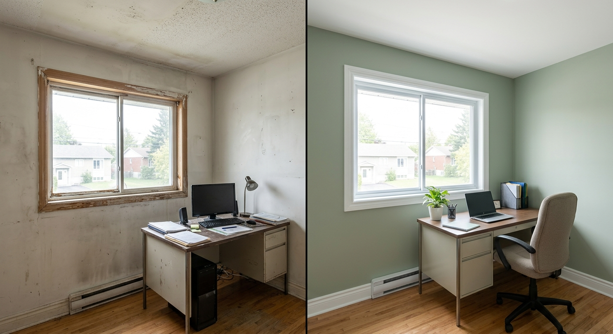

Horaires coordonnes
Nous pouvons discuter d'une sequence de travail pour reduire les interruptions et garder les zones importantes accessibles.
Un peintre commercial Terrebonne doit livrer une finition propre tout en respectant vos operations. Peinture Terrebonne intervient dans les bureaux, boutiques, cliniques, locaux professionnels, immeubles locatifs et espaces a fort passage.
Nous planifions l'acces, les zones prioritaires, les odeurs, le sechage, les protections et la remise en service. Le resultat doit renforcer votre image de marque, pas compliquer votre semaine.

Nous pouvons discuter d'une sequence de travail pour reduire les interruptions et garder les zones importantes accessibles.
Corridors, receptions et salles d'attente demandent des produits lavables et resistants aux contacts frequents.
Un local propre rassure clients, patients, locataires et employes des les premieres secondes.